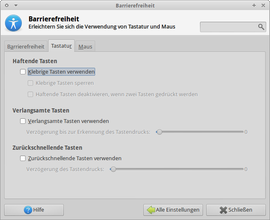

Barrierefreiheit
Zum Verständnis dieses Artikels sind folgende Seiten hilfreich:
 Die auf dieser Seite vorgestellten Programme und Tipps sollen Menschen mit einer eventuell vorhandenen Behinderung wie z.B. einer Sehschwäche helfen, Ubuntu ohne Einschränkungen nutzen zu können. Das Stichwort lautet Barrierefreiheit. Folgende Konfigurationsmöglichkeiten stehen dem Benutzer innerhalb der verschiedenen Desktopumgebungen von GNOME, KDE und Xfce zur Verfügung:
Die auf dieser Seite vorgestellten Programme und Tipps sollen Menschen mit einer eventuell vorhandenen Behinderung wie z.B. einer Sehschwäche helfen, Ubuntu ohne Einschränkungen nutzen zu können. Das Stichwort lautet Barrierefreiheit. Folgende Konfigurationsmöglichkeiten stehen dem Benutzer innerhalb der verschiedenen Desktopumgebungen von GNOME, KDE und Xfce zur Verfügung:
Automatische Anmeldung bei Systemstart
Bildschirmauflösung für bessere Lesbarkeit verringern
Bildschirmtastaturen zur vereinfachten Eingabe nutzen
Symbolgrößen verändern
Kontrastreiches Design verwenden
Menü modifizieren
Schriftgröße in Anwendungen und im System anpassen
Bildschirmleseprogramm, um Inhalte per Audio auszugeben
Sprachausgabe nutzen
Desktopverknüpfungen erstellen
Etliche Angaben lassen sich schon während des Anmeldens machen, das Bild rechts zeigt das Auswahlmenü unter Ubuntu 10.04 (erreichbar über das Symbol rechts unten im Panel). Dort können für die zu startende Sitzung bereits viele der genannten Optionen festgelegt werden.
Eine ergänzende Maßnahme kann das Aktivieren der Systemklänge sein:
Eingabe¶
Tastatur¶
onBoard - Bildschirmtastatur
KVkbd
 - Bildschirmtastatur der KDE
- Bildschirmtastatur der KDE Caribou
- Bildschirmtastatur GNOMEFlorence Virtual Keyboard
- Bildschirmtastatur
Maus¶
Easystroke - Mausgesten auf dem GNOME-Desktop erkennen und definierte Aktionen ausführen.
eViacam - das Tool erkennt mithilfe einer Webcam, in welche Richtung der Benutzer den Kopf bewegen und lässt den Mauszeiger gleichartig folgen.
Dasher - Ein Texteingabesystem für den Bildschirm; bedienbar mir Maus, Touchpad, Touchscreen oder Eyetracker.
Mauszeiger - das Aussehen (und über Designs die Größe) des Mauszeigers ändern
Ausgabe¶
Sprachausgabe¶
Sprachausgabe
 bietet eine Übersicht für diverse Programme für diesen Zweck
bietet eine Übersicht für diverse Programme für diesen ZweckGespeaker - Eingaben direkt in Sprache ausgeben, Texte vorlesen lassen, oder als .wav-Datei speichern
KMouth - Teil des KDE-Accessibility-Projektes
Omilo - Sprachausgabeprogramm, das Festival/Flite und Mary-Stimmen verwenden kann, auch zur Nutzung mit Orca geeignet
xsane2speech - Dokumente direkt aus XSane heraus "vorlesen" und als .mp3 archivieren
Desktopumgebungen¶

Unity/GNOME 3¶
In Ubuntu und bei Ubuntu-GNOME findet man die Zugangshilfen in den GNOME3 Systemeinstellungen unter:
"Systemeinstellungen → Zugangshilfen"
zu finden und in die vier Kategorien "Sehen", "Gehör", "Texteingabe" und "Zeigen und Klicken" unterteilt.
Sehen¶
Im Reiter "Sehen" kann man den "Kontrast" und die "Textgröße" einstellen. Des Weiteren kann man die Option "Vergrößerung" aktivieren und durch einen Klick auf die Schaltfläche "Optionen ..." einstellen. Außerdem besteht noch die Möglichkeit einen "Bildschirmleser" einzuschalten.
Gehör¶
Hier kann man einen "Visuellen Alarm" einschalten, der die Fensterleiste oder den ganzen Bildschirm blinken lässt, wenn ein Warnklang abgespielt wird.
Texteingabe¶
In diesem Reiter kann man mit der Option "Texteingabeassistent" die Bildschirmtastatur einschalten. Mit der Option "Klebrige Tasten" erkennt Ubuntu eine Abfolge von Zusatztasten als Tastenkombination an. Durch die Option "Tastenverzögerung" wird ein längerer Tastendruck nur als ein Tastendruck erkannt. Wie lange die Verzögerung sein soll, kann man zusätzlich einstellen. Mit der Option "Springende Tasten" kann Ubuntu einen schnellen doppelten Tastenanschlag ignorieren. Ganz unten befindet sich ein Feld zum Testen der Einstellungen und links daneben ist ein Link, der direkt zur Einstellung der Tastenkombinationen führt.
Zeigen und Klicken¶
In "Zeigen und Klicken" wird mit der Option "Tastaturmaus" das Steuern des Mauszeigers über den Nummernblock ermöglicht. Durch die Option "Simulierter Kontextklick" kann man mit dem Gedrückthalten der primären Maustaste das Kontextmenü öffnen. Des Weiteren kann man mit der Option "Überfahren-Klick" automatisch einen Klick ausführen lassen, wenn sich der Mauszeiger nicht mehr bewegt.
Tastenkürzel¶
Unter:
"Systemeinstellung → Tastatur"
kann man im Reiter "Zugangshilfen" Tastenkürzel für verschiedene Optionen der Zugangshilfe festlegen.
| Zugangshilfe mit GNOME3 - Sehen |
| Zugangshilfe mit GNOME3 - Gehör |
| Zugangshilfe mit GNOME3 - Texteingabe |
| Zugangshilfe mit GNOME3 - Maussteuerung |
Autologin¶
Wie man in Ubuntu und Varianten die automatische Anmeldung (Autologin) aktiviert, wird im Artikel LightDM beschrieben. Die einzige Ausnahme bildet Ubuntu GNOME, das den Displaymanager GDM einsetzt.
GNOME Shell¶
Mit einem Klick dieses Symbol , im oberen Panel der GNOME Shell gelangt man in ein Kontextmenü, mit dem man bequem die Optionen "Hoher Kontrast", "Vergrößern", "Große Schrift", "Bildschirmtastatur", "Visuelle Warnung", "Klebrige Tasten", "Tastenverzögerung", "Springende Tasten" und die "Tastaturmaus" an- und abschalten kann.

KDE¶
Unter KDE aktiviert man die Hilfsmittel über die KDE Systemeinstellungen:
"K-Menü → Rechner → Systemeinstellungen → Zugangshilfen"
Signale¶
Im Reiter "Signale" können Einstellungen zu den Systemsignalen vorgenommen werden. Es kann ein hörbares Signal eingeschaltet werden oder auch ein sichtbares Signal. Beim hörbaren Signal kann zwischen dem Signalton des Systems und einem benutzerdefinierten Signal aus einer Audio-Datei gewählt werden.
Beim sichtbaren Signal ist es möglich, den Bildschirm zu invertieren oder den Bildschirm in einer Farbe aufleuchten zu lassen. Zusätzlich kann die Dauer des sichtbaren Signals eingestellt werden.
Klebende Tasten¶
Klebende Tasten erlauben es, Tastenkombinationen auch zu verwenden, wenn man die Tasten nicht gleichzeitig drücken kann. Sie werden im Reiter "Klebende Tasten" aktiviert. Sobald klebende Tasten aktiviert sind, erklingt ein Signalton, wenn man eine Sondertaste gedrückt hat. Man kann nun eine weitere Taste drücken, und dies wird als Tastenkombination gewertet. So verhält sich das Drücken von Alt und danach von Tab ⇆ genauso wie ein direktes gleichzeitiges Drücken von Alt + Tab ⇆ .
Verlangsamte Tasten¶
Über den Reiter "Verlangsamte Tasten" ist es möglich, die Reaktionszeit der Tastatur zu verlangsamen. Ein langes Drücken einer Taste wird somit nur als einmaliges Drücken interpretiert.
Tastenkürzel¶
Unter
"K-Menü → Systemeinstellungen → Regionaleinstellungen & Sprache → Tastenkürzel"
bzw. in KDE 4:
"K-Menü → Rechner → Systemeinstellungen → Tastatur & Maus → Tastenkürzel"
öffnet sich ein Fenster, in dem in einer Tabelle die einzelnen Aktionen eine Tastenkombination bekommen. So wird z.B. das Schließen von Fenstern durch die Tastenkombination Alt + F4 ausgelöst. Die Kombinationen können durch Anklicken in der jeweiligen Zeile unter der Spalte "Aktion" geändert oder eine neue Kombination direkt angelegt werden. Sie wird automatisch erkannt und übernommen. Nach dem Schließen des Feldes gelten die neuen Änderungen.
Hilfsprogramme¶
KDE besitzt eine Reihe von Hilfsprogrammen, welche standardmäßig jedoch nicht installiert sind. Diese können jedoch über folgende Pakete nachinstalliert werden [1]:
kdeaccessibility
 mit apturl
mit apturl
Paketliste zum Kopieren:
sudo apt-get install kdeaccessibility
sudo aptitude install kdeaccessibility
Hierüber stehen folgende Hilfsmittel zur Auswahl:
Bildschirmlupe
Die KDE Bildschirmlupe startet man über:
"K-Menü → Dienstprogramme → Bildschirmlupe (KMag)"
Automatische Mausklicks
Automatische Mausklicks ermöglichen das automatische Klicken durch Positionierung der Maus über einer Schaltfläche. Es wird gestartet über:
"K-Menü → Dienstprogramme → Automatische Mausklicks (KMouseTool)"
Außerdem gehören die Programme Jovie und KMouth zur Sprachausgabe zu dem Projekt.
Autologin¶
Das automatische Anmelden erleichtert den Zugang zu Kubuntu. Dies kann man über die KDE-Systemeinstellungen aktivieren:
"K-Menü → Rechner → Systemeinstellungen → Erweitert → Anmeldungsmanager"
Hier wählt man den Reiter "Convenience" (letzter Reiter) und aktiviert das automatische Anmelden für den entsprechenden Nutzer.

Xfce¶
Desktop¶
Häufig benötigte Anwendungen können auf dem Desktop hinterlegt werden. Hier einen  Rechtsklick auf den leeren Desktop ausführen und im sich nun öffnenden Menü "Starter erstellen..." anwählen. Alternativ einen Programmstarter aus einem der Ordner auf den Desktop kopieren.
Rechtsklick auf den leeren Desktop ausführen und im sich nun öffnenden Menü "Starter erstellen..." anwählen. Alternativ einen Programmstarter aus einem der Ordner auf den Desktop kopieren.
Autologin¶
Wie man ab Ubuntu 11.10 den Autologin aktiviert, wird im Artikel LightDM beschrieben.

Barrierefreiheit¶
Unter dem Reiter "Barrierefreiheit" kann der Benutzer Module zur Barrierefreiheit sowie Systemklänge aktivieren.
Tastatur¶
Bildschirmtastatur¶
Die Aktivierung der Bildschirmtastatur ist im entsprechenden Artikel beschrieben.
Tasten¶
Unter den Tastatureinstellungen können erweiterte Optionen für den Umgang mit der Tastatur eingestellt werden. Nützlich sind hier die "Tastenkürzel" und "Zugreifbarkeit". Menschen, denen es schwer fällt, eine Tastenkombination gleichzeitig zu drücken, können die Funktion "klemmende Tasten" aktivieren.
Thunar¶
Thunar gestattet es, den 1-Klick-Modus zu aktivieren. Dazu die entsprechende Option unter "Bearbeiten -> Einstellungen -> Verhalten" aktivieren.
Um Verknüpfungen in Thunar mit einen  -Klick zu öffnen, im Dateimanager die entsprechende Option aktivieren. Dies erleichtert den Zugriff.
-Klick zu öffnen, im Dateimanager die entsprechende Option aktivieren. Dies erleichtert den Zugriff.
Schrift-/Symbolgröße¶
Um unter Xubuntu die Schrift- und Icongröße zu verändern, ruft man
 "Einstellungen → Arbeitsoberfläche → Verhalten"
"Einstellungen → Arbeitsoberfläche → Verhalten"
auf und nimmt die entsprechenden Änderungen vor.
Design¶
Ein kontrastreiches Design gestattet es mitunter, den Bildschirminhalt besser zu erkennen. Hier ein geeignetes Design auswählen.
Links¶
Ubuntu 12.04 LTS Desktop Guide - Universal access
- Leitfaden zur Barrierefreiheit und weitere TippsKDE Userbase
 Accessibility - Barrierefreiheit
Accessibility - BarrierefreiheitVinux 5.0
- Linux für sehbehinderte und blinde Anwender, Pro-Linux, 11/2015Ubuntu 12.04 trotz Sehbehinderung
Artikel aus Ubuntu-User 04/2012Voxin
- Kommerzielle Sprachausgabe mbrola
- Sprachausgabe (Freeware)Gally
- Gebärdensprache (American Sign Language) für HörgeschädigteEldy - Desktop-Oberfläche für ältere oder Nutzer mit einer Behinderung
- Erstellt mit Inyoka
-
 2004 – 2017 ubuntuusers.de • Einige Rechte vorbehalten
2004 – 2017 ubuntuusers.de • Einige Rechte vorbehalten
Lizenz • Kontakt • Datenschutz • Impressum • Serverstatus -
Serverhousing gespendet von